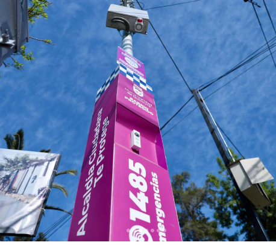

Abril 2026
Refuerzo de patrullajes mixtos en barrios residenciales
Coordinación entre Seguridad Municipal, Carabineros y redes vecinales para aumentar la presencia preventiva en horarios de mayor flujo.
Seguridad integrada para Quilicura — prevención, atención y participación ciudadana.
Nuestra misión es proteger a la comunidad de Quilicura mediante políticas integradas de prevención, respuesta a víctimas y participación ciudadana, con enfoque de género y uso responsable de tecnologías.
Información reciente sobre operativos, campañas preventivas y acciones coordinadas en tu barrio.
Abril 2026
Coordinación entre Seguridad Municipal, Carabineros y redes vecinales para aumentar la presencia preventiva en horarios de mayor flujo.
Abril 2026
Modernización del sistema de televigilancia y ampliación de cobertura con más de 1.000 cámaras y drones activos en la comuna.
Marzo 2026
Capacitaciones gratuitas para vecinas y vecinos sobre denuncias, convivencia y cuidado de espacios públicos.
Información rápida sobre emergencias, servicios municipales de seguridad, resultados del periodo 2022–2025 y vías para denunciar o sumarte a las redes de prevención de tu barrio.
Números prioritarios y recomendaciones para usarlos de forma segura.
Central 1485 (24/7) y canales coordinados con instituciones.
Prevención del delito, atención a víctimas, protección de infancia y adolescencia.
Programa Lazos, Senda Previene, Centro de las Mujeres, Somos Barrio, seguridad vial y control de incivilidades.
Cómo denunciar y canalizar casos de forma segura y confidencial.
Denuncia Seguro (*4242 y web), contactos municipales y orientación psicosocial.
Acciones implementadas, avances y logros en seguridad comunitaria.
92 acciones estratégicas, cumplimiento 85–90%, despliegue tecnológico y patrullajes mixtos.
Monitoreo en línea y cobertura territorial.
1.000+ cámaras, drones activos, monopostes y central de televigilancia 24/7.
Cómo sumarte y acceder a la información pública.
Redes vecinales, mesas barriales, presupuesto, informes e información pública.
Infraestructura de televigilancia, drones y patrullaje preventivo al servicio de la comunidad.
Cámaras de vigilancia
Drones activos
Monopostes
Motocicletas
Apoyos y acciones específicas para distintos grupos de la comunidad de Quilicura.
Protección de derechos, prevención de vulneraciones y acompañamiento a familias mediante programas especializados como Lazos y Senda Previene.
Atención a víctimas de violencia de género, orientación psicosocial y derivación a redes de apoyo y protección.
Acciones de acompañamiento, prevención de estafas, cuidado del espacio público y articulación con redes vecinales.
Imágenes de vehículos, tecnología y despliegue territorial de Seguridad Pública Quilicura.



Conoce más sobre el trabajo diario de la Dirección de Seguridad Pública y Comunitaria de Quilicura.
Lugares de atención, teléfonos y correos para orientación y coordinación en seguridad.
Ignacio Serrano Nº557
articulacionterritorial.seguridad@quilicura.cl
Ignacio Serrano Nº557
WhatsApp: 56 9 3283 8516
Teléfono: 2 3384 2092
Camino del Cerro Nº1676
Teléfono: 2 2944 4739